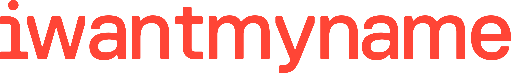
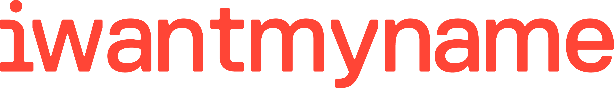

Open Data Day 7th July hosted by FigureNZ, Collider, and OS//OS and held at the BizDoJo, 115 Tory Street, Wellington
Why?
Technology has made it easy and cheap to collect, store, analyse and share data. Access and use of data is the new hot property, and touted as an increasingly powerful force across our society. But it is invisible to most of us, and most of us don’t know what it really is or how we can use it.
Data has been stuck in the realms of technical experts and we’re now moving into a place where everyone will be able to use it, but to truly realise its value we need to learn how.
What is open data all about? What makes it “open”? Where can you find it? What can you do with it? How do we make the most of it? How does it impact you?
What?
OS//OS is diving into open data. Join us to hear from and work with practitioners as we explore the power and potential of Open Data, in ways that are easy for everyone not just experts. Be inspired and connect with the people leading the way in New Zealand.
Expect a day of workshops, practical examples and challenges, chances to connect, listen and be inspired by leading practitioners in New Zealand. [Content to be confirmed].
Who?
It’s actually for everyone, because we will do best overall when we’re all able to use data. Perhaps you work in public policy? Run or work in a business? Visualise data? Are a data designer, an analyst or a researcher? A journalist? A software developer keen to know how you can use open data? An advocate for openness? Or someone passionate about understanding our country and its issues and performance better through the use of numbers?
This will be a ‘hands on’ day for people who work with data or want to work with data in New Zealand.
Watch this space for limited tickets
Co Hosts

 
